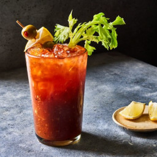

El mejor Bloody Marry del perro mundo

Descripcion
En esta pagina les mostraremos como realizar la llamada la mejor michelada del "perro" mundo
bautizada asi por Eulalio Gutierrez quien a lo largo de su carrera se ha dedicado a divulgar
Esta receta muy sencilla pero muy efectiva para hacer una michelada tradicional, pero sobre todo
La mejor del perro mundo
Ingredientes
- 1 Tarro
- Sal de mar
- Jugo Magui
- Salsa Inglesa
- Dos Onzas de limon (Un caballito)
- Dos Onzas de Vodka (Un caballito)
- 355 ml de Clamato
- Salsa Tabasco
- Apio o Aceitunas
- Un poco de hielo
- limones
Instrucciones
- Con la cascara de un limon y la sal escarchar el tarro
- Agregar los hielos al tarro
- agregar de las dos onzas de limon
- Agregar de una a tres gotas de salsa tabasco
- Agregar de 4 a 5 porciones (?) de magui
- De 11 a 12 serviditas de salga inglesa
- Agregar el clamato y el caballito de vodka
- Agregar el apio o palillo con aceitunas